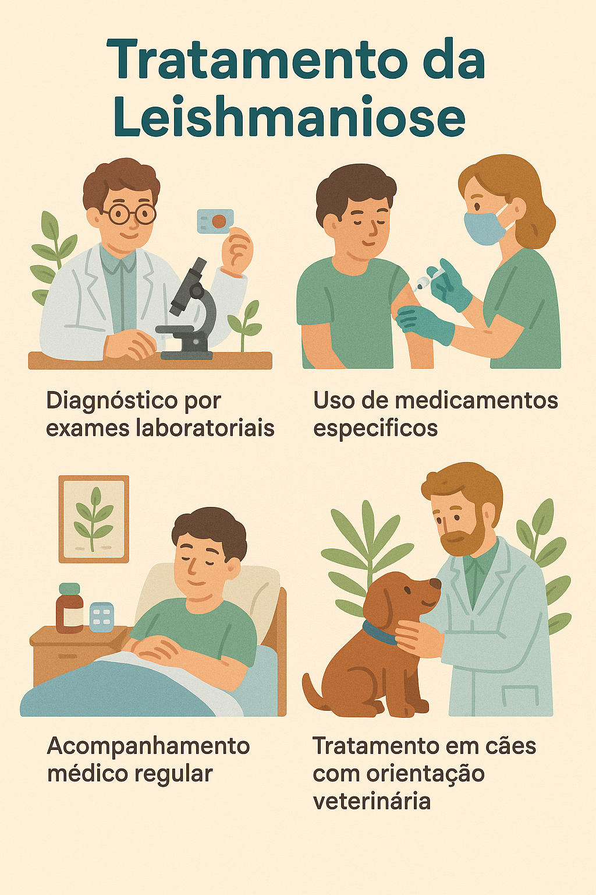
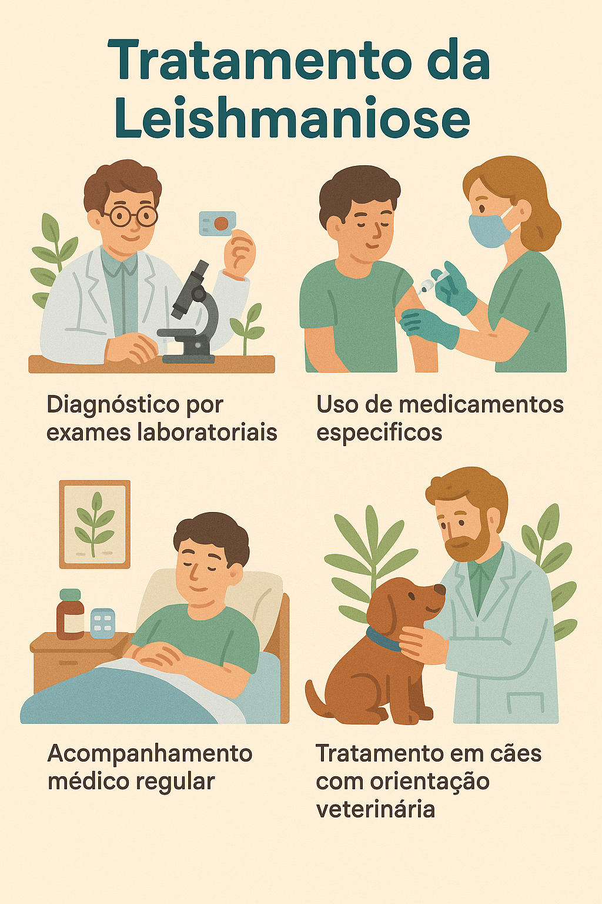

Como tratar a Leishmaniose
O tratamento depende da forma da doença e pode envolver medicamentos específicos, como antimoniais e anfotericina B, sempre com acompanhamento médico.
O tratamento depende da forma da doença e pode envolver medicamentos específicos, como antimoniais e anfotericina B, sempre com acompanhamento médico.
